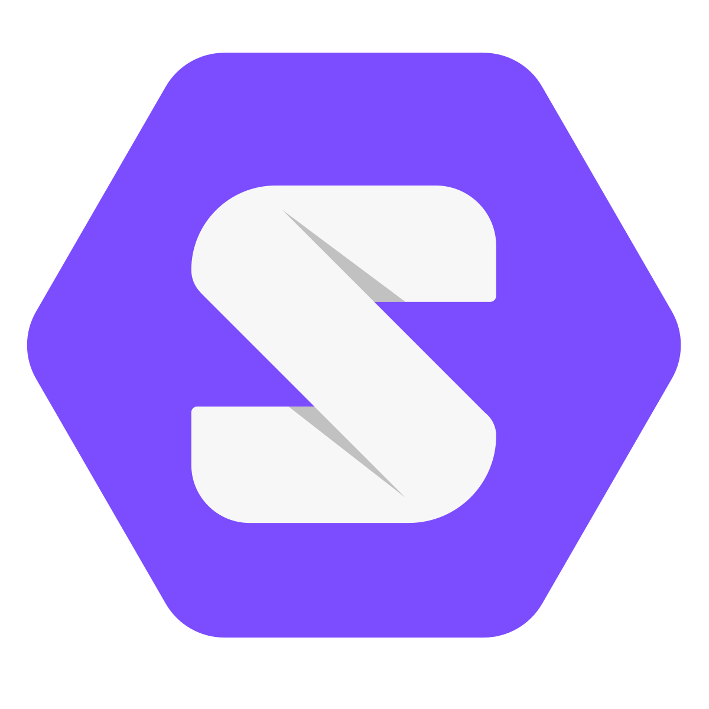

Solid
a Web-based decentralization ecosystem
Users are in full control over their own data
Built on open standards
Compatible with Web technologies

1989, CERN Switzerland
Tim Berners-Lee
inventor of the World Wide Web
The Web's foundational ideas
-
Data is linked to each other
Across heterogeneous systems (non-centralisation)
-
Browser programs
Visualises data and helps users navigating the Web
-
Everyone can read and write data
Web browsers are editors
-
Open standards
Anyone can implement tools (browsers, ...) on top of it
1990-... World-wide adoption
Not just for researchers anymore
1995 - 2017: The Browser Wars
Ended with Chrome's dominance by 2017
Image credit
The "write" part got lost along the way
-
The first Web browser was also an editor
Web is a collaborative space
-
The next Web browsers took out the "write" part
It was considered too difficult
How to represent permissions and identity in a decentralized way?
-
Web initially became popular as read-only
Static websites
1999: Web 2.0: Getting back "write"
-
The first social networks
Users could easily write their own content
-
Centralised identity and access control
Each Web application has its own system for editing
Non-interoperable systems → data silos
Problems with centralized Web apps
-
Not in control of personal information
Centralized data storage simplifies abuse of information (PRISM, GDPR)
-
Vendor lock-in
Companies incentivised to make users dependent on products. (non-interoperability)
-
Censorship and influence of content
Suppression of non-aligned ideas. (filter bubbles)
Start of the Solid project
-
2016: Solid was initiated at MIT by Tim Berners-Lee
A course-correction for the Web
Attempt to solve the problems that arose as a consequence of centralisation
-
2018: Inrupt was founded by John Bruce and Tim Berners-Lee
Commercial entity to drive the Solid ecosystem
How Solid works
-
Personal data pods
Places to store data
-
Implications of pods
Paradigm shifts for applications
-
Standards
How everything becomes interoperable
Personal data pods
Full control of where your pod is stored and who can access it

Pods can store any kind of data
Personal data, photo's, friends, ...

Data become decoupled from apps


-
Today: data and app are tightly coupled
No choice over where and how data is stored, and who can access it
-
Solid: data and app are decoupled
Apps require read/write permissions from the user
A paradigm shift in app design
-
Storage of data is decentralised
Data is stored in the user's pod instead of in the app
-
Combining multiple data pods
Apps become views over one or more data pods
-
Explicit access control
Apps can only view or modify (parts of) your data after explicit approval
Users gain freedom to choose apps
-
Data can be managed with different apps
Because they are decoupled
-
Enables more innovation from app developers
Reuse existing data, and focus on user experience instead of data collection
A collection on open standards
Why Solid uses open standards
-
Aligned with Web standards
Back to the original concept of a decentralised Web
-
Not proprietary
Everyone can implement these standards
Different implementations of pods, apps, ...
More competition → more innovation → better for users
-
Everyone can contribute
New versions of standards can be created
Solid is an ecosystem
-
Not a platform or application
Not meant as a replacement for others
-
A collection of open standards
To enable pods and apps to be interoperable
-
Not owned by anyone
Individuals, companies, and organisations can use and build at Solid
Next steps for Solid
-
Work on standards
Filling in the missing pieces
-
Creating personal data pods
Writing efficient software to host Solid data pods
-
Effectively building apps
Creating new techniques to create apps in a decentralised ecosystem
Existing and new standards
-
The foundational standards are in place
Data representation (RDF)
Querying (SPARQL)
Web Publishing (Linked Data Platform)
-
Other standards are still in-progress
Authentication (WebID)
Authorization (WAC)
Cryptographic signatures
Interoperability
Standards are created collaboratively

-
World Wide Web Consortium (W3C)
International standards organisation for the Web
Founded in 1994 by Tim Berners-Lee
-
Solid Community Group
Hundreds of members world-wide
Span different companies, organisations, and universities
Different panels, each with a specific focus
https://www.w3.org/community/solid/
Choose your Solid pod implementation
Actively being developed by different parties
Choose your Solid pod location
-
Self-hosting
On your own machine
In full control
-
Free hosting
Free, but with limitations
https://solidcommunity.net/
Government-provided?
-
Rent hosting
Pay for less limitations and guaranteed availability
How to build apps on top of Solid?
Apps need to be able to access multiple pods
-
Today: centralized apps assume a single data source
Techniques for retrieving data are simple
-
Future: decentralized apps combine data across multiple data sources
New techniques are required
A centralised social network app
Data is obtained from a single location
A decentralised social network app
Data is obtained from multiple locations
Each data element can be stored in a different place (posts, comments, likes, ...)
- ~100 friends
- ~1.000 posts
- ~10.000 comments
- ~100.000 likes
- → millions of data sources to access
How to find data across a massive number of sources?
Open research questions
-
Finding data pods on-the-fly
No centralised index is available
-
Prioritisation and parallelisation
E.g., posts from friends may be preferred
-
Hiding complexities from app developer
Finding data is complex → abstract into reusable software libraries
Solid aims to redecentralise the Web
-
Giving everyone a personal data pod
In full control of the user
-
Data become decoupled from apps
Apps have to ask permission to access your data
-
Built on open standards
Anyone can implement parts within the Solid ecosystem
-
Several open challenges
Everyone is welcome to contribute